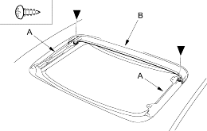
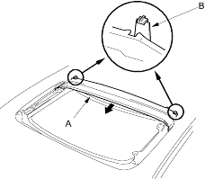
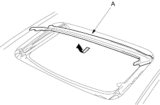

- Remove the glass (see page 20-194).
- With the sunroof wrench, move both glass brackets (A) to the position where the sunroof normally pivots down and remove the screws securing the drain channel (B).
Fastener Locations  : Screw, 2
: Screw, 2

- Release the drain channel (A) from both hooks (B) of the drain channel slider by pulling the drain channel forward.

- Remove the drain channel (A).

- Install the channel in the reverse order of removal and note these items:
- Push the drain channel onto the hooks until a faint click is heard.
- Check the glass height adjustment (see page 20-194).
- Check for water leaks. Let the water run freely from a hose without a nozzle. Do not use a high-pressure spray.